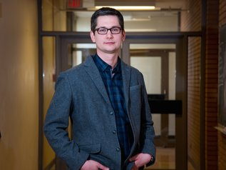

Darren Derksen, PhD
Professor of Chemistry, University of Calgary

- Department of Chemistry, University of Calgary
- Alberta Children’s Hospital Research Institute
- Arnie Charbonneau Cancer Institute
- Hotchkiss Brain Institute
Professor Derksen is originally from northern Alberta (a little over 1000 km north of Calgary). He completed his undergraduate Honours Chemistry degree in 2003 at the University of Alberta (Edmonton, AB), then completed his PhD in the lab of Professor John C. Vederas at the same institution in 2008, working on the synthesis and evaluation of antimicrobial peptides and new synthetic methods. He then held an Alberta Heritage Foundation for Medical Research (AHFMR) postdoctoral fellowship at the University of Cambridge in the lab of Professor Ian Paterson, working on the total synthesis of peloruside A.
Darren began his independent career in 2010 at one of Canada’s top primarily undergraduate institutions, St. Francis Xavier University (Antigonish, NS), and moved to the University of Calgary in 2014 to take up the Alberta Children’s Hospital Foundation Junior Chair in Medicinal Chemistry. He was promoted to Associate Professor (with tenure) in 2018 and to Full Professor in 2023.
The Derksen lab has been supported by NSERC Discovery and NSERC Collaborative Research and Development grants, the Canada Foundation for Innovation, the Alberta Children’s Hospital Foundation, and collaborative grants from CIHR and the Multiple Myeloma Research Foundation. The lab is part of multidisciplinary research institutes at the University of Calgary, including the Alberta Children’s Hospital Research Institute, the Arnie Charbonneau Cancer Institute and the Hotchkiss Brain Institute.
Education
- Postdoctoral Research Fellow, University of Cambridge, UK. Supervisor: Prof. Ian Paterson2008–2010
- PhD Chemistry, University of Alberta, Edmonton, AB. Supervisor: Prof. John C. Vederas2008
- BSc Honours Chemistry (First Class Honours), University of Alberta, Edmonton, AB2003
Honours and awards
Selected external awards, independent career
- Parex Innovation Fellowship2022
- Graduate Students’ Association Excellence in Supervision Award, University of Calgary2020
- Canadian Cancer Society Research Institute Junior Investigator Travel Grant2016
- Careers in Cancer Research Development Program (supported by CIHR-ICR and CCSRI)2015
- Multiple Myeloma Research Foundation Award (collaboration with Dr. Nizar Bahlis)2015
- Canada Foundation for Innovation, John R. Evans Leaders Fund2015
- Thieme Chemistry Journal Award2014
Before independent career
- Alberta Heritage Foundation for Medical Research (AHFMR) Postdoctoral Fellowship, University of Cambridge
- Boehringer Ingelheim Prize, University of Alberta
- NSERC Postgraduate Studentship, University of Alberta
- Walter H. Johns Graduate Fellowship, University of Alberta
- Alberta Ingenuity Graduate Studentship, University of Alberta
- Advanced Food and Materials Network (AFMNet) Studentship, University of Alberta